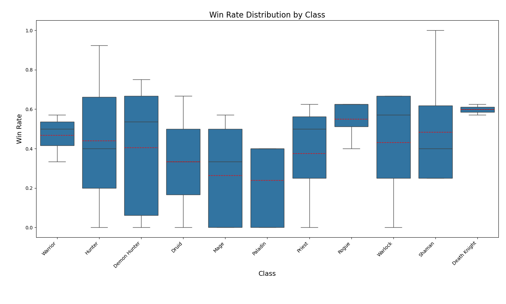
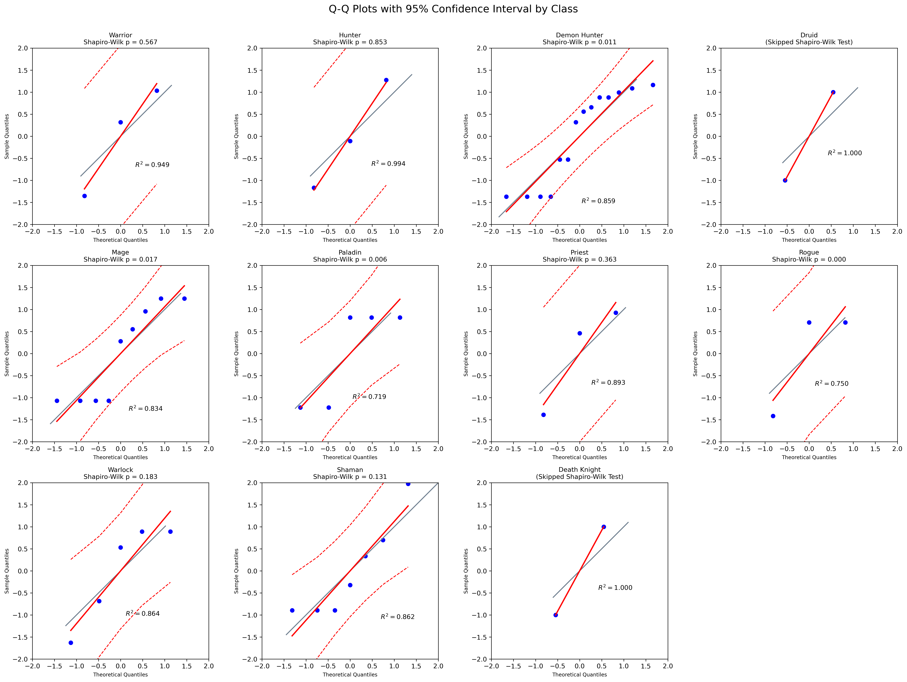
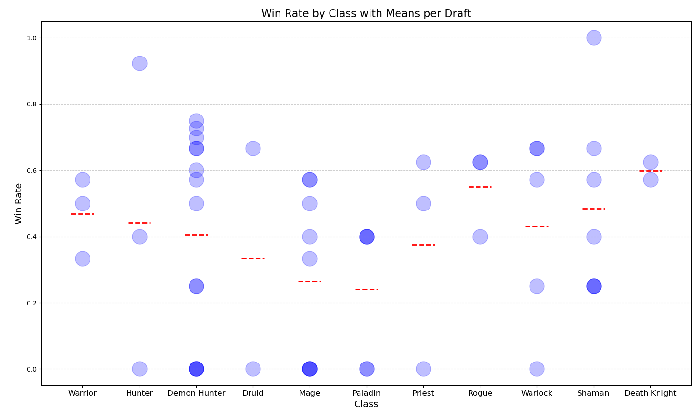

Finding 1
In Hearthstone, many players believe they perform better with their favorite classes. I was one of them. This makes sense because, besides being familiar with the cards, the class you pick directly affects the card pool and hero power. In order to test my belief, I formulated the following null hypothesis:
Null Hypothesis: There is no significant difference in the mean win rates among the classes.
Alternative Hypothesis: There is a significant difference in the mean win rates among the classes.
I decided to run an ANOVA test since I am examining whether there is a significant difference between the dependent groups in terms of their mean win rates.
Validating ANOVA
Independence
The measurements should be independent, i.e., the measured value of one group should not be influenced by the measured value of another group.
I assume independence relying on the assumption of this is a competitive game 🥴.
Homogeneity
The variances in each group should be approximately equal.
Homogeneity
I conducted Levene test.
- Null Hypothesis: Groups have equal variances.
- Alternative Hypothesis: Groups have different variances.
According to the Levene test, I found that the assumption of homogeneity of variances was upheld (p = 0.610).
Normal distribution
The data within the groups should be normally distributed.
First, I conducted a Shapiro-Wilk test to assess normality. However, two classes (Death Knight and Druid) had fewer than three data points. Due to the limitations of the dataset, I decided to use Q-Q plots with a 95% confidence interval. Since all data points lie within the confidence interval, I assumed normality.
ANOVA
According to the ANOVA test, I failed to reject the null hypothesis (p-value: 0.778).
In conclusion, there are no significant differences in win rates among the classes.